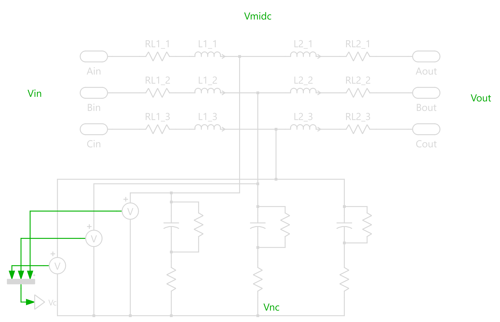

LCL Filter Design for Solar Inverters
Passive Filters | Power Quality | Magnetic Design
Calculation and optimized design of LCL filters for 50kW photovoltaic grid-connection inverters. This image represents the structural schematic and serves as the technical basis for the design parameters (L1, L2, C). Priority was given to minimizing magnetic core losses and complying with harmonic injection regulations (IEEE 519).